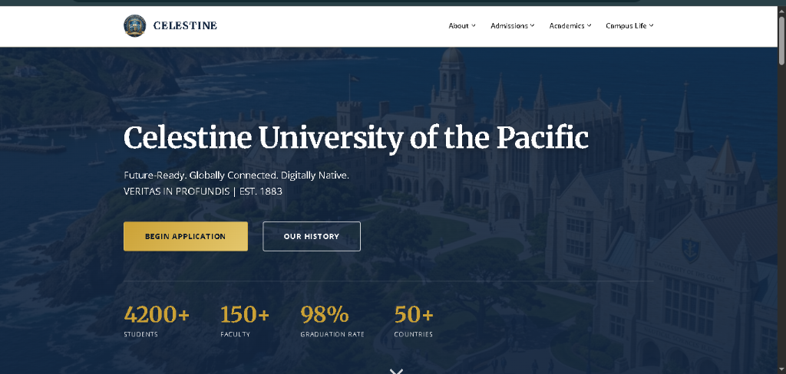

01 — Collaborative Platform

Multi-View01 — Celestine University of the Pacific
An enterprise-grade academic admissions and institutional management platform architected on a
high-throughput PHP MVCR (Model-View-Controller-Repository) design pattern.
Integrates asynchronous AJAX validation (ajax_validate.php), isolated repository database
transactions, a modular enrollment pipeline, and optimized MySQL persistence
(celestine_university.sql) engineered for zero downtime.
PHP 8.x
MVCR Architecture
MySQL DB
Repository Pattern
AJAX Engine
JavaScript (ES6+)
Bootstrap 5